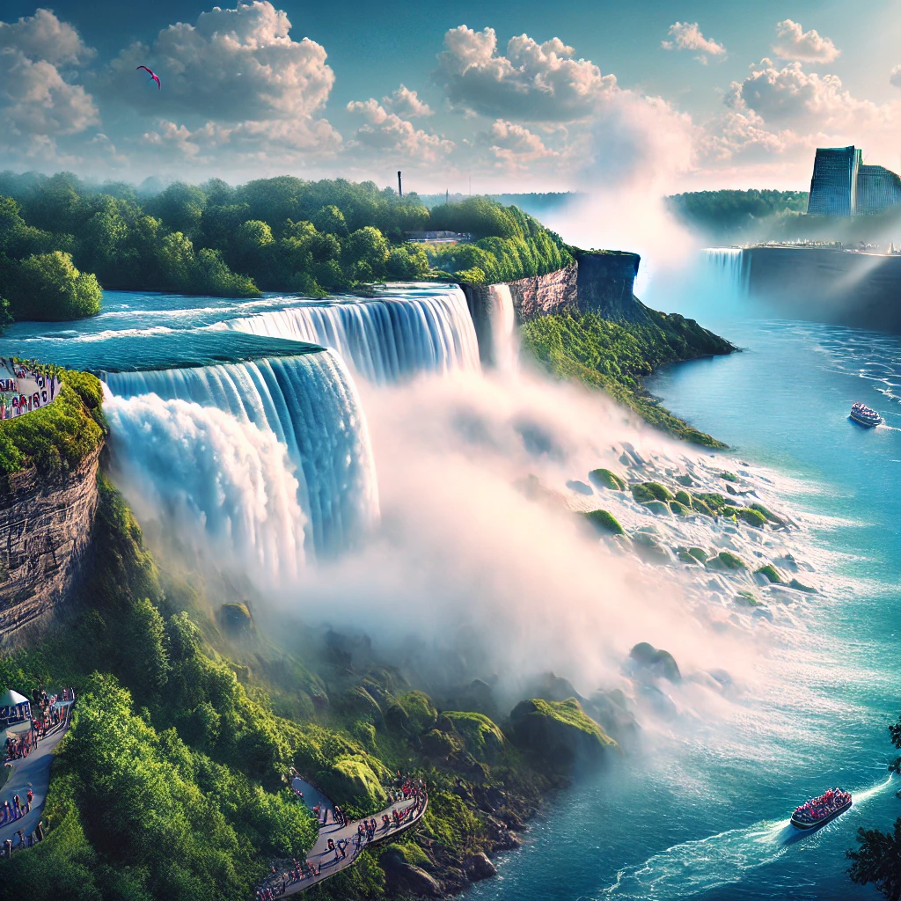

Explore Buffalo and Niagara: Must Visit Places
A journey of stunning sights with a perfect mix of nature and iconic landmarks

Buffalo's View
Horseshoe Niagara Falls
From Buffalo, the view of Niagara Falls presents a stunning vista with a beautiful rainbow in the mist.

Niagara Nights
Fireworks over the Falls
Fireworks light up the night sky over Niagara Falls, casting a magical glow on the water reflection.

Feel The Falls
Cave Of The Winds Experience
You're swept into Niagara's embrace, feeling the mist and power of the falls up close. I personally love this experience.

Whirlpool State Park
Scenic View of Niagara Beauty
Whirlpool offers a mesmerizing view of swirling water, where the river's force creates a natural vortex.